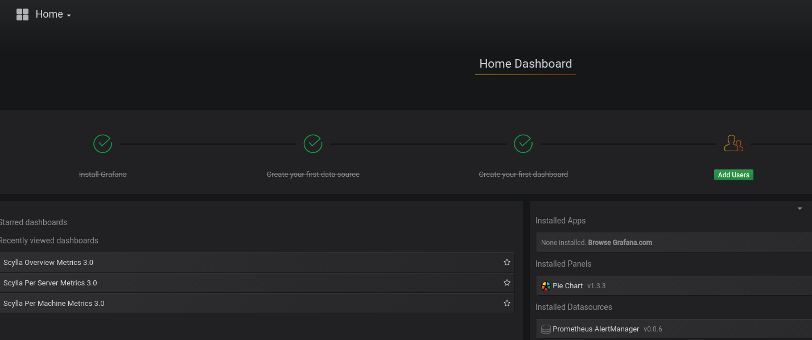

Deploying Scylla Monitoring Without Docker¶
The following instructions will help to deploy Scylla Monitoring Stack in cases where you can not use the recommended Docker version.
Please note, Scylla recommends you use the Docker version as it will provide you with most updated, current Scylla Monitoring system.
Minimal Production System Recommendations¶
CPU - at least 2 physical cores/ 4vCPUs
Memory - 15GB+ DRAM
Disk - persistent disk storage is proportional to the number of cores and Prometheus retention period (see the following section)
Network - 1GbE/10GbE preferred
Calculating Prometheus Minimal Disk Space requirement¶
Prometheus storage disk performance requirements: persistent block volume, for example an EC2 EBS volume
Prometheus storage disk volume requirement: proportional to the number of metrics it holds. The default retention period is 15 days, and the disk requirement is around 200MB per core, assuming the default scraping interval of 15s.
For example, when monitoring a 6 node Scylla cluster, each with 16 CPU cores, and using the default 15 days retention time, you will need minimal disk space of
6 * 16 * 200MB ~ 20GB
To account for unexpected events, like replacing or adding nodes, we recommend allocating at least x4-5 space, in this case, ~100GB. Prometheus Storage disk does not have to be as fast as Scylla disk, and EC2 EBS, for example, is fast enough and provide HA out of the box.
The main item to set an alert on is the available disk space in the monitoring system. Data is indefinitely accrued on the Prometheus data directory. The current monitoring solution does not churn data.
Install Scylla Monitor¶
The following procedure uses a CentOS 7 based instance
Download the latest Scylla Monitoring release.
wget https://github.com/scylladb/scylla-monitoring/archive/scylla-monitoring-3.4.tar.gz
Open the tar
tar -xvf scylla-monitoring-3.4.tar.gz
Install Alertmanager¶
Tested with alertmanager 0.20.0 version
Install alertmanager
wget https://github.com/prometheus/alertmanager/releases/download/v0.20.0/alertmanager-0.20.0.linux-amd64.tar.gz
tar -xvf alertmanager-0.20.0.linux-amd64.tar.gz
Copy the following file:
rule_config.ymlfromscylla-monitoring-scylla-monitoring-3.4/prometheusdirectory toalertmanager.ymlin the alertmanager installation directory.
For example:
cp -p /home/centos/scylla-monitoring-scylla-monitoring-3.4/prometheus/rule_config.yml /home/centos/alertmanager-0.20.0.linux-amd64/alertmanager.yml
Start the Alertmanager
For example:
cd alertmanager-0.20.0.linux-amd64
./alertmanager
Verify that Alertmanager is up and running, point your browser to the Alertmanager IP:Port
For example:
http://192.168.135.166:9093/
Install Prometheus¶
Tested with Prometheus version 2.18.1
Install Prometheus
wget https://github.com/prometheus/prometheus/releases/download/v2.18.1/prometheus-2.18.1.linux-amd64.tar.gz
tar -xvf prometheus-2.18.1.linux-amd64.tar.gz
Copy the following files:
scylla_servers.yml,prometheus.rules.ymlfromscylla-monitoring-scylla-monitoring-3.4/prometheusdirectory to Prometheus installation directory.
Copy prometheus/prometheus.yml.template to prometheus.yml
For example:
cp scylla-monitoring-scylla-monitoring-3.4/prometheus/*.yml prometheus-2.18.1.linux-amd64
cp scylla-monitoring-scylla-monitoring-3.4/prometheus/prometheus.yml.template prometheus-2.18.1.linux-amd64/prometheus.yml
Edit the
prometheus.ymlfile to point to the correct static data sources.
Note
Make sure to include the honor_labels: false parameter in the prometheus.yml file.
vi prometheus-2.18.1.linux-amd64/prometheus.yml
Set the alertmanger address and port by replacing AM_ADDRESS in the file.
For example if the alertmanager will run on the same host:
alerting:
alertmanagers:
- static_configs:
- targets:
- 127.0.0.1:9093
Replace the files in to point to the right local file, typically for scylla, node_exporter and manager_agent you can use the same file (scylla_servers.yml).
For example the scrape config for Scylla:
global:
scrape_interval: 5s # By default, scrape targets every 5 second.
scrape_timeout: 4s # Timeout before trying to scape a target again
# Attach these labels to any time series or alerts when communicating with
# external systems (federation, remote storage, Alertmanager).
external_labels:
monitor: 'scylla-monitor'
scrape_configs:
- job_name: scylla
honor_labels: false
file_sd_configs:
- files:
- scylla_servers.yml
relabel_configs:
- source_labels: [__address__]
regex: '([^:]+)'
target_label: __address__
replacement: '${1}:9180'
- source_labels: [__address__]
regex: '(.*):.+'
target_label: instance
replacement: '${1}'
Create and set
scylla_servers.ymlfile point to your Scylla nodes andscylla_manager_server.ymlfile to point to your Scylla Manager.
Note
There is no need to configure node_exporter_server. Instead, in the Prometheus scrape config of the node_exporter
you can use the same file you used for Scylla and Prometheus will assume you have a node_exporter running on each Scylla server.
An example for those files can be found under the Prometheus directory: prometheus/scylla_servers.example.yml and prometheus/scylla_manager_servers.example.yml
Note
You must have both files even if you are not using Scylla Manager
Add the labels for the cluster and data-center
scylla_servers.yml:
For example:
cat scylla_servers.yml
# List Scylla end points
- targets:
- 192.168.66.6
- 192.168.66.244
labels:
cluster: cluster1
dc: dc1
- targets:
- 172.17.0.3
labels:
cluster: cluster1
dc: dc2
Note
See the previous note about deprecating the node_exporter_servers.yml file.
scylla_manager_server.yml
For example:
- targets:
- 127.0.0.1:56090
Create a data directory for Prometheus to store the metrics data
For example:
mkdir prometheus-2.18.1.linux-amd64/mydata
Start Prometheus server:
For example:
cd prometheus-2.18.1.linux-amd64
./prometheus --config.file=prometheus.yml --storage.tsdb.path mydata
Data should start accumulate on: ./mydata
Verify that Prometheus is up and running, point your browser to the Prometheus IP:Port
For example:
http://192.168.135.166:9090/

Prometheus console should be visible
Verify that the node_exporter and scylla metrics accumulating in the server by executing a query through the console
For example:
node_memory_MemFree

And
scylla_reactor_utilization

At this point Scylla is emitting the metrics and Prometheus is able to store them.
Install Grafana¶
Tested with Grafna 6.7.3
Install Grafana based on the instructions here make sure to use version 6.7.0 or higher
Depends if you installed Grafana from a repository (yum install), or if you downloaded the zip version, the directory structure will be different in the rest of the steps.
Access Scylla-Grafana-monitoring directory
cd scylla-monitoring-scylla-monitoring-3.4/
Copy the plugins to the grafana plugins directory (by default
/var/lib/grafana/)
sudo cp -r grafana/plugins /var/lib/grafana/
If you installed Grafana from packages, instead of /var/lib/grafana/ you should copy it to public/app inside the directory you
opened Grafana in.
For example:
cp -r grafana/plugins ../grafana-6.7.3/public/app
Provision the Dashboard them
For example Scylla version 4.0 and Scylla manager version 2.0
For Grafana installed with yum install
sudo cp grafana/load.yaml /etc/grafana/provisioning/dashboards/
sudo mkdir -p /var/lib/grafana/dashboards
sudo cp -r grafana/build/* /var/lib/grafana/dashboards
For Grafana installed from packages
cp -p -r grafana/build/* ../grafana-6.7.3/public/build/
cp -p grafana/load.yaml ../grafana-6.7.3/conf/provisioning/dashboards/load.4.0.yaml
cp -p grafana/load.yaml ../grafana-6.7.3/conf/provisioning/dashboards/load.manager_2.0.yaml
Edit the load.* files in /home/centos/grafana-6.7.3/conf/provisioning/dashboards/ for the correct path,
for example load.4.0.yaml would point to: /home/centos/grafana-6.7.3/public/build/ver_4.0 and the FOLDER will be 4.0
Set the data source by copy
datasource.ymland edit it
sudo cp grafana/datasource.yml /etc/grafana/provisioning/datasources/
For Grafana installed from packages
cp -p grafana/datasource.yml /home/centos/grafana-6.7.3/conf/provisioning/datasources/
You should set the Prometheus and the alertmanager IP and port.
For example
sudo cat /etc/grafana/provisioning/datasources/datasource.yml
apiVersion: 1
datasources:
- name: prometheus
type: prometheus
url: http://192.168.135.167:9090
access: proxy
basicAuth: false
- name: alertmanager
type: camptocamp-prometheus-alertmanager-datasource
orgId: 1
typeLogoUrl: public/img/icn-datasource.svg
access: proxy
url: http://192.168.135.166:9093
password:
user:
database:
basicAuth:
isDefault:
jsonData:
severity_critical: '4'
severity_high: '3'
severity_warning: '2'
severity_info: '1'
Start the Grafana service
For Grafana installed with yum install
sudo service grafana-server start
For Grafana installed from packages:
cp -p /home/centos/grafana-6.7.3/conf/sample.ini /home/centos/grafana-6.7.3/conf/scylla.ini
Edit scylla.ini to reflect the right paths in the paths section of the file.
plugins = /home/centos/grafana-6.7.3/data/plugins
provisioning = /home/centos/grafana-6.7.3/conf/provisioning
Start the server:
cd /home/centos/grafana-6.7.3/
./bin/grafana-server -config /home/centos/grafana-6.7.3/conf/scylla.ini
Make sure Grafana is running
Point your browser to the Grafana server port 3000, the assumption is that Grafana and Prometheus are collocated on the same server.
